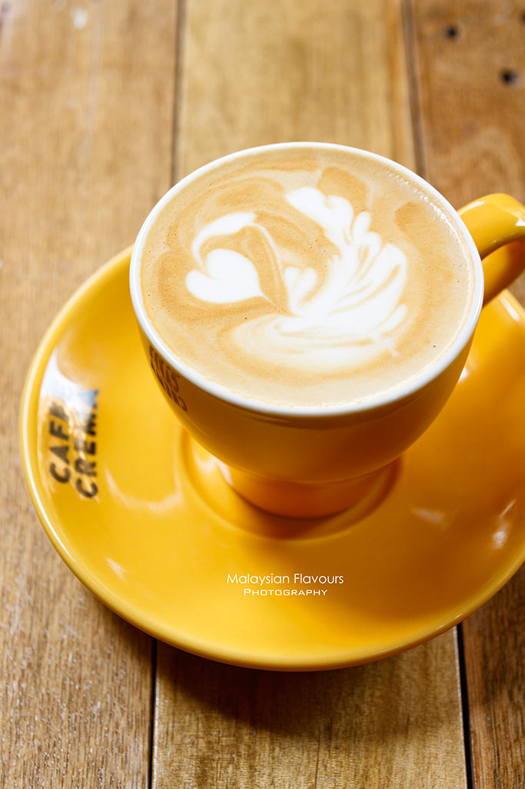

Summergirl had a sip of the mocha, and from there she strongly believes that Caffe Crema hot chocolate will be lovely. She said hot chocolate will be her order in the next visit. Caffe Crema mocha holds a memorable chocolaty, followed by light coffee sweetness, balanced with milk. We like how it wasn’t overwhelmed with heaviness of chocolate, which happens in certain coffee places.

Flat White RM10.00
Velvety smooth with yummy milkiness, sweet throughout accompanied by very light bitter aftertaste. Aside from common milk coffee, Caffe Crema coffee special menu is complete with Cold Brew, Siphon, Cold Drip and interestingly, Moka Pot.